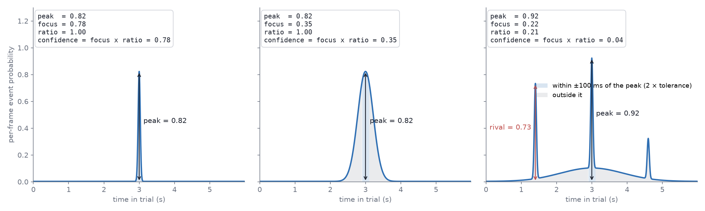

Model confidence#
Every predicted label carries a confidence in the labels TSV (a hand-placed
label is 1.0), and the review tools threshold on it: the label grid outlines
tiles below Flag confidence below, Histogram… shows where the scores
sit per class, and Mark low-confidence as uncurated pre-selects exactly those
tiles. The number is computed by the model that made the prediction, and
how it is computed depends on what kind of question that model answered.
There are two kinds.
State events: which class is this frame?#
The segmentation pipeline (eto.segment) predicts state events — spans.
Its output is one probability distribution over the classes at every
frame: \(p_1(t), \dots, p_C(t)\) with \(\sum_c p_c(t) = 1\). The label at a
frame is the largest. A segment’s confidence in the TSV is the mean
probability of its own class over its frames (ethograph/segment/inference.py):
where \(S\) is the segment’s frames and \(c\) its class. The question at each frame is “which one”, so the number is how much of the distribution the chosen class holds.
The confidence overlay drawn during review is a per-frame curve instead: how
far the distribution is from uniform, its normalised entropy
(ethograph/labels/predictions.py):
1 means all the mass sits on one class, 0 means every class is equally
likely.
Point events: when did it happen?#
The LightGBM lightgbm model [Ke et al., 2017] and the E2E-Spot pixel model [Hong et al., 2022] predict point events. For each class they produce a curve over time, \(p_k(t)\), the per-frame belief that class \(k\)’s event is here, and the prediction is the tallest peak of that curve, \(t^\ast = \arg\max_t p_k(t)\) (a local maximum — a curve still climbing at the trial’s edge is not a peak).
Entropy across classes says nothing useful about this: the question is not
“which class” but “where on the curve”, and the alternatives are other
moments, not other classes. So the confidence is a statistic of the
curve’s shape around its peak, read within a window \(w\) of the peak
(ethograph/labels/curve_confidence.py):
peak — the model’s own score at the event.
focus — the share of the curve’s mass within \(w\) of the peak:
1is one clean bump, lower means a broad bump or belief spread elsewhere.ratio — one minus the tallest rival over the peak, a rival being another local maximum outside \(w\) (never the peak’s own shoulder):
1is no rival,0a second candidate as tall as the first. Blind to width by design — width isfocus’s job.confidence — both at once: a lone sharp bump reads near
1, a rival or a smeared bump pulls it down.

Two curves read 0 whatever their shape: one that is nearly nothing
everywhere (its tallest peak below 0.05 — otherwise a single surviving blip
would be the cleanest bump imaginable and read 1), and one with no
interior peak at all, or higher at an edge than at any peak inside (still
climbing at the trial’s end — the event may lie past it). Whatever rule is
chosen, such a label’s confidence is 0: flagged for review, never dropped.
The window is the user’s timescale, not a constant. \(w = 2 \times\) the
tolerance the labels are believed to: the lightgbm model takes it from its own
tolerance_s, the pixel model from infer.focus_window_ms (twice the label
precision). A bump wider than twice the label precision is smeared by the
user’s own definition; a peak further away than that is a rival.
Which statistic is written is a property of the model, and it is measured, not assumed. On the same held-out trials, how well each candidate separates the model’s hits from its misses (AUC) decides:
The lightgbm model ranks every candidate per class when it trains (
fit_confidence_calibration) and writespeakunlessfocus,ratioor their product wins by a clear margin — its curve is shape-constrained by construction (a Gaussian-weighted target smoothed with the matching kernel), so its bumps all look alike and height is what varies. The training message says which was chosen.The pixel model writes
focus × ratio. E2E-Spot’s per-frame softmax normalises across classes and nothing normalises across time, so a class can sit moderately high for a long stretch and its peak still reads as confident: height was near chance (AUC 0.58) wherefocus,ratioand their product reached ~0.8. The two halves behave differently in a histogram —ratiois bimodal (one candidate or two),focussits in a middle band — so how much each should count is a review preference, not a model constant: the written number is the plain product, and the emphasis is set in the GUI with the histogram in view.
Every candidate stays readable off the curve frame-by-frame review draws
under the label (one per class in scope, on a fixed 0–1 axis): the peak the
label sits on, the rival that pulled ratio down, the smear that pulled
focus down. That is what lets a threshold be set by looking.
How often a model is right is a verdict on the model, not on a label. Training reports the held-out hit rate per class (peck: 6/8 within 0.05 s); it is never folded into any label’s confidence.
Changing the rule in the GUI#
Which reading is the confidence is a review preference, so it is set where its effect is seen: the Histogram… popup of the label grid and the video grid carries a Confidence rule panel above the bars, whenever the session has a prediction run with curves beside it (every run merged, newest per class).
Rule —
focus × ratio(the default the pixel model writes),ratioalone (one candidate or two),focusalone (sharp or smeared),peak, or custom:ratio × (α + (1 − α)·focus)with one slider — α = 1 isratio, α = 0 is the product.Same event within — the window \(w\) in ms.
Every change redraws the histogram and restyles the grid’s tiles at once, so
leaning toward candidates or sharpness is judged on the distribution it
produces, with the threshold line in the same picture. Apply to labels
confirms it: the values are written into the labels — only automated labels
that have a curve; manual and curated ones are a human’s word and never
change — as one undo step per trial (Ctrl+Z takes it back). Closing the
popup without applying puts the original values back. The rule, α and window
are remembered across sessions.
Copy for project.yaml puts the same choice on the clipboard as the
infer: lines of a spot project config —
infer:
confidence: ratio
focus_window_ms: 100
— so the next inference() writes confidence the way the review settled on,
and the grid and the pipeline never disagree about what the number means
(infer.confidence, infer.confidence_alpha for the custom rule).
Reviewing by confidence#
Label grid view… (Labels tab ▸ Curation) puts each label’s confidence
and labeling_method on its tile and outlines everything below Flag
confidence below in red, in the grid and in the exported PDF. The threshold
is typed in full rather than stepped, so a model whose scores sit at the
bottom of the range can be flagged at 0.0002 as easily as at 0.6;
Histogram… beside it shows where the scores actually sit, per class,
before you commit — with a bimodal statistic such as ratio the gap is
where the threshold goes.
In the Click = uncurated, rest = curated mode, Mark low-confidence
as uncurated pre-clicks exactly the outlined tiles; click any other tile
that looks wrong, and Done curates everything else in one go. With the
Curation section in frame-by-frame review, a tile click drops straight into
that boundary instead: Enter moves the event onto the right frame,
Backspace deletes one that never happened, N marks it curated (with Click N curates current ticked).
Judge a cutoff by what it buys: on a session with curated labels, “reviewing everything below t catches what share of the errors?” is the question the confidence exists to answer, and it is a better guide than how the histogram looks.